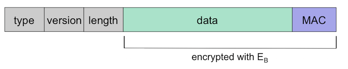
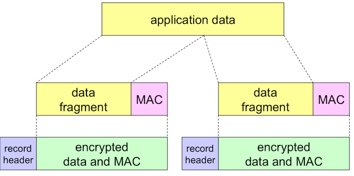

This the final module in the course and covers mechanism for transport layer security and network layer security. Transport layer security functions are implemented in SSL/TLS protocols, network layer security is implemented in IPSec. We will cover both of these protocols at a high level.
At the end of this module, students will be able to:
SSL/TLS is used to implement HTTPS, the encrypted version of HTTP. This is vitally important for people who use the Internet for shopping or banking (i.e., almost everyone). IPSec is becoming more popular as a technique for protecting communications at the network layer (which would also protect transport layer communications).
Watch the following short video to get an overview of HTTPS and TLS/SSL
Professor Messer, “HTTPS and TLS/SSL”, July 2014
Optional: For more in-depth information on SSL, read
Note (as the textbook does) that the description here is a simplified version of SSL. For details about the actual SSL, see the optional readings provided on the previous page.
SSL has three phases: handshake, key derivation, and data transfer.
The goals of the handshake phase (using our Alice and Bob examples) are
Alice and Bob now share a secret key MS. But to increase security, they don't use this key directly for communication. Instead, they use MS to derive four other keys:
Now, Alice and Bob share all 4 keys (EB, MB, EA, MA). The two E keys will be used for encryption/decryption, and the two M keys will be used to generate the MAC of the data for message integrity.
The image below shows the SSL record for a transmission from Bob to Alice.
The fields are as follows:
As described in the reading, the data from the application layer is split up so that a MAC can be computed for data integrity. The image below shows how data is split from the application layer into SSL records.
As mentioned previously, HTTPS encrypts the session data using SSL. For web pages using SSL, the URL will begin with https:// instead of http://
HTTPS provides both server authentication and encrypted communication between the web client and web server.
How does HTTPS work? Let's walk through the operations that a web client and web server would perform to set up and use HTTPS.
First, we assume that the web server has obtained a certificate validating who it says it is. This certificate contains CA- (S+, ID information), where CA- is the certificate authority's private key and S+ is the web server's public key.
To begin the authentication process, the web server sends m, S-(m), CA- (S+, ID information) to the client
The client then uses the CA's public key CA+ to open the certificate and can then retrieve the server's public key, S+
Then, the client uses server's public key S+ to decrypt the encrypted message S-(m)
The client compares the resulting message to the unencrypted message m. If these match, then the client has authenticated the web server because only the owner of the S- could have encrypted the message and the certificate authority has verified that S is who they say they are. (We're putting a lot of trust in the certificate authority here, but there has to be some trusted third party.)
Now, the client can encrypt its messages with the web server's public key, S+.
The rest of this module focuses on network layer security techniques. The focus will be on IPsec and Internet Key Exchange, which uses the Diffie-Helman key exchange protocol.
IPsec has two principal protocols:
Because confidentiality is so important in many IPsec applications, ESP is more widely used than AH.
Watch the following short video to get an overview of IPsec
Professor Messer, “IPsec”, July 2014
Reading Assignment: Section 8.7 – Network-Layer Security: IPsec and VPNs in the textbook. The goal of the reading here is to get a general idea of how IPsec works, don't worry about the details.
The security associations (SAs) in IPsec use shared encryption keys. Recall that the problem with shared keys is in getting both sides to agree upon the same key without an intruder also being able to determine the key.
The whole idea behind Internet Key Exchange (IKE) is that we want to be able to use symmetric cryptography because it's faster, but the two hosts first need a way to securely decide upon the shared secret key.
Watch the following video for a physical-world demonstration of key exchange.
Key Exchange
Chris Bishop
Jun 2009
3:29
“This clip from the 2008 Royal Institution Christmas Lectures shows a simple demonstration of how two people can agree on a secret key, even though all of their communications are carried out in public. In the electronic world, secret key exchange allows computers to communicate securely, and is used, for example, when you give your credit card information to an on-line shop.”
The Internet Key Exchange protocol is a bit more complicated than the demonstration shown in the video, but the basic idea is the same.
Internet Key Exchange (IKE) uses the Diffie-Hellman key exchange protocol. Watch this video for an overview of the Diffie-Hellman Key Exchange protocol.
Diffie-Hellman Key Exchange
Public Key Cryptography: Diffie-Hellman Key Exchange
February 2012
5:24
“Diffie-Hellman key exchange was one of the earliest practical implementations of key exchange within the field of cryptography. It relies on the discrete logarithm problem.”
Using the same notation from the Diffie-Hellman calculator (below), here are the steps used in the example in the video:
Experiment with the Diffie-Hellman calculator at http://dkerr.home.mindspring.com/diffie_hellman_calc.html